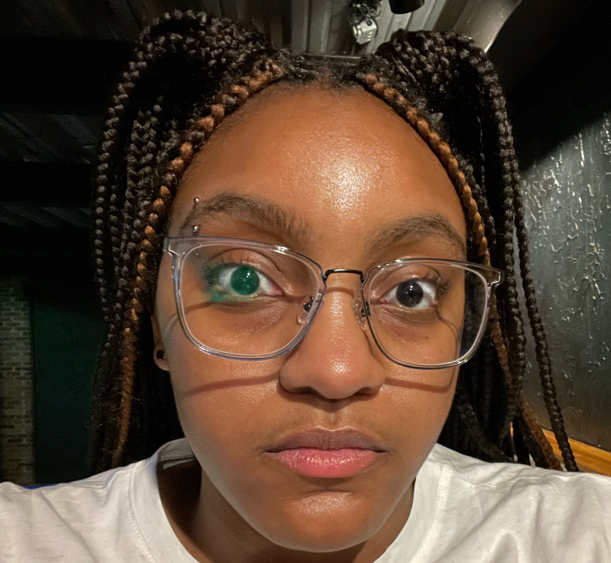

About Me

I am an undergraduate student studying Writing and Art History at Western Illinois University. I am an African American, Generation Z representative from Chicago, IL.
Food and Art is something that I am passion about consuming and learning. I believe that when talking about culture, food is valuable art because it tells so much about the way cultures celebrate and represent their lives with each other.
Conducting research about the way humans created art in the past reveals the ways in which we have changed as a society is interesting to me, especially when concerning food. My favorite foods from my culture include sweet potatoes, baked macaroni and cheese, and barbecue ribs.